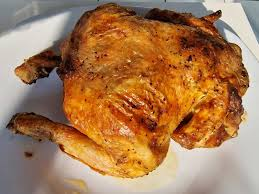

Chicken Recipe

Ingredients
- 2 Chicken breast chunk
- 1 gram Ginger powder
- 3 pieces Garlic
- 1 Green bell pepper
- 1 Red bell pepper
- 1 Onion
- 4 dry chilli
- 2 handful peanuts
- 1 egg
- 1 gram Salt, Soy bean oil, Vinegar, soy sauce and lime juice
procedure
- Heat vegetable oil in a nonstick skillet;add chicken and stir fry until golden.
- About 6 to 8 minutes; add bell peppers, ginger powder, garlic, onions and dry chili and stir.
- Mix bean oil, salt, egg, vinegar, soy sauce and lemon juice together and mix. About 3 minutes add to the chicken and stir until well combined. Add your peanuts and toss for one minute longer. Remove from the heat and serve.